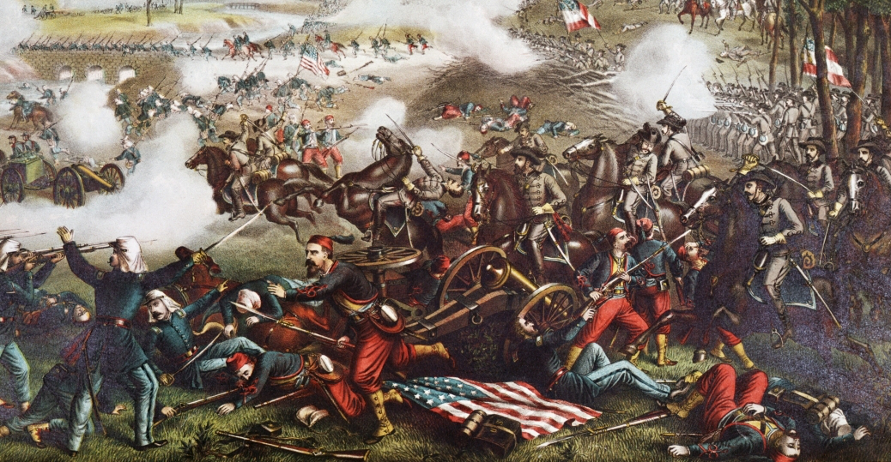

В прошлом выпуске вежливые южные джентльмены образовали свое достойное государство и аккуратно турнули оголодавших северян из Форта-Самтер, постаравшись минимизировать потери среди личного состава обеих армий. Однако подобное благодушие не могло продолжаться долго.

В ответ на потерю стратегического пункта обидевшийся Линкольн выступил с воззванием, в котором сообщил, что произошедшее — бунт на корабле и форменное безобразие, поэтому США набирают добровольцев с целью научить кой-кого на юге вежливости и хорошим манерам. Такой заход не остался незамеченным как патриотично настроенными гражданами Севера — народу шустро набралось даже больше ожидаемого, так и с недоумением смотревшими на происходящее штатам Вирджиния, Арканзас, Теннесси и Северная Каролина. Все они хором сделали США ручкой и попросились в семью к дикси.
Для КША это было очень кстати. Во-первых, теперь они могли спокойно набирать своих добровольцев. Во-вторых — перенести столицу из Монтгомери в Ричмонд, штат Вирджиния, а то из Алабамы хрен куда доберешься. В-третьих, но профит от этого стал понятен не сразу, вместе с Вирджинией КША получили значимого персонажа в нашей истории — полковника Роберта Эдварда Ли. Сразу после начала всей заварухи правительство США предлагало ему пост главнокомандующего, но Ли предпочел не ввязываться в предстоящее и отказался, равно как и проигнорировал схожие предложения от южан. Однако после присоединения родной Вирджинии к дикси особых вариантов не осталось, так что он вступил в армию КША вместе с вооруженными силами всего штата.
Правда, были и недостатки, которые, в отличие от вышеназванного третьего пункта выяснились практически сразу. Во-первых, часть Вирджинии не захотела вливаться в веселую южную компанию, обозвалась Департаментом Огайо и начала вооруженную борьбу супротив КША. Командовал этими мелкими местечковыми стычками некто генерал Макклеллан, и про него мы тоже еще не раз услышим. Стоит отметить, что на локальном уровне гражданин с профицитом согласных в фамилии командовал вполне удовлетворительно — южане преодолеть его сопротивление не могли.
Во-вторых, после переезда столицы в более цивилизованный Ричмонд выяснилось, что расстояние по прямой от новой ставки Конфедерации до Вашингтона, где сидел обиженный Линкольн, составляет аж 150 километров. То есть, подлетное время даже по тем временам можно было считать несущественным — форсированным маршем добраться до логова врага многие осилили бы за 2-3 недели. Естественно, Авраам не собирался упускать такой шанс и недавно призванные добровольцы, кое-как сбитые в отряды, поползли к цели. Внезапно получивший звание бригадного генерала бывший майор Макдауэлл был назначен ответственным за «бурю и натиск», несмотря на все его возражения и попытки сообщить командованию, что новобранцев было бы неплохо сперва хоть как-то обучить. Разумные аргументы Линкольна не впечатлили — «если партия сказала надо» и так далее.
Встреча двух одиноких сердец была неизбежна, и произошла она на реке Булл-Ран. Южане, прознав о надвигающейся армии, перекрыли обе дороги на Ричмонд двумя армиями, находившимся в стороне друг от друга — неизвестно же, куда попрет супостат.
Макдауэлл, у некоторых подразделений которого тупо заканчивался контракт, и их нужно было срочно отправлять домой, торопился, причем тогда, когда не надо. Сразу после марша, не дав солдатам отдохнуть, он ввязался в перестрелку с конфедератами, заблаговременно окопавшимися на другом берегу. Предсказуемо отступив, он все-таки решил немного повременить, повтыкать в карты и заодно дать личному составу выдохнуть и хоть немного прийти в себя. С одной стороны, разумно, а с другой…
Дикси, определив, где засел и куда примерно пойдет злобный ворог, объединили армии в одну, причем, для быстроты, воспользовались железнодорожным транспортом для переброски войск. Впервые в истории, между прочим. Гражданская война вообще отличалась небывалым до тех пор применением разнообразных новинок науки и техники, и мы еще не раз про это расскажем.
Продолбав все сроки, через три дня северяне все же пошли в наступление. И сперва у них получалось достаточно неплохо — конфедераты вынужденно отступали, злобно огрызаясь, и победа США была вполне ощутима. Их подвела любовь к сложной тактике и уставшие и толком не обученные бойцы. Войска шли плотными колоннами, причем нередко прямо во фронт противнику — а эпоха мушкетов, из которых пуля летела куда угодно, но только не в цель, уже прошла.
Солдат южан тоже нельзя было назвать ветеранами-коммандос, но у них и задача была поскромнее — сидеть на одном месте и делать так, чтобы их никто оттуда не согнал.Особенно в этом преуспела одна из бригад, находившаяся под командованием Томаса Джонатана Джексона. За непоколебимое упорство в том бою он получил широко известную впоследствии кличку Stonewall.
В какой-то момент донельзя измотанные северяне дрогнули и начали отступать. Джексон же, решив, что одного рожденного мема за бой недостаточно, немедленно придумал второй: гоните их штыками, — сказал он, — и орите как фурии. Южане с блеском выполнили поставленный приказ. Вопя что кому в голову взбредет (обычно какой-то нечленораздельный бред, примерно так многие из нас в детстве изображали атаки индейцев на бледнолицых), дикси набросились на вражин. Зрелища визжащих демонов, несущихся на них с горы с примкнутыми штыками, слабые и изнеженные городские жители не выдержали. Отступление стало бегством, а вслед бегущим наступали воодушевившиеся южные полки.
Север в панике отступил обратно за реку. От армии толком ничего не осталось — она рассыпалась буквально на глазах. Хоть какую-то вменяемость сохранила только бригада генерала Шермана — она (и еще одно обстоятельство) не позволила янки потерять вообще все.
В Вашингтон ушла паническая телеграмма: «Бой проигран. Спасайте Вашингтон и остатки этой армии. Переформировать бегущие войска не удастся». Север потерял в том сражении 460 человек, Юг — 387. По нынешним меркам такие жертвы среди 18000-х армий — дело смешное, но в ту пору, да еще в спокойных Штатах, обе стороны были в некотором замешательстве. Первая битва при Булл-Ране сходу вошла в число самых кровопролитных за историю молодого государства.
Линкольн после такой оплеухи пришел в активное оживление и принялся спасать ситуацию. Не прошло и недели после разгрома, как была принята Резолюция Криттендена-Джонсона, общий смысл которой сводился к уговорам рабовладельческих штатов Миссури, Кентукки и Мериленд не выходить из состава США. Дескать, вся заваруха-то совсем не из-за рабов — да причем тут рабы вообще, тьфу, мелочь какая! — а потому что нельзя вот так бросать страну, и давайте-таки спасать государство.
Юг же осознал три важных вещи. Первое: в следующий раз так может и не повезти, бойцов надо обучать. Второе: флаги стран слишком похожи, надо придумать свой, пооригинальнее. Третье: очень тяжко преследовать бегущего противника, когда у него форма почти такого же цвета — непонятно, кому лупишь в спину, своему брательнику или гнусному городскому упырю.
Ошибки эти дикси начали исправлять.
Но об этом (равно как и о том, что происходило в других частях страны) мы узнаем в следующих выпусках.